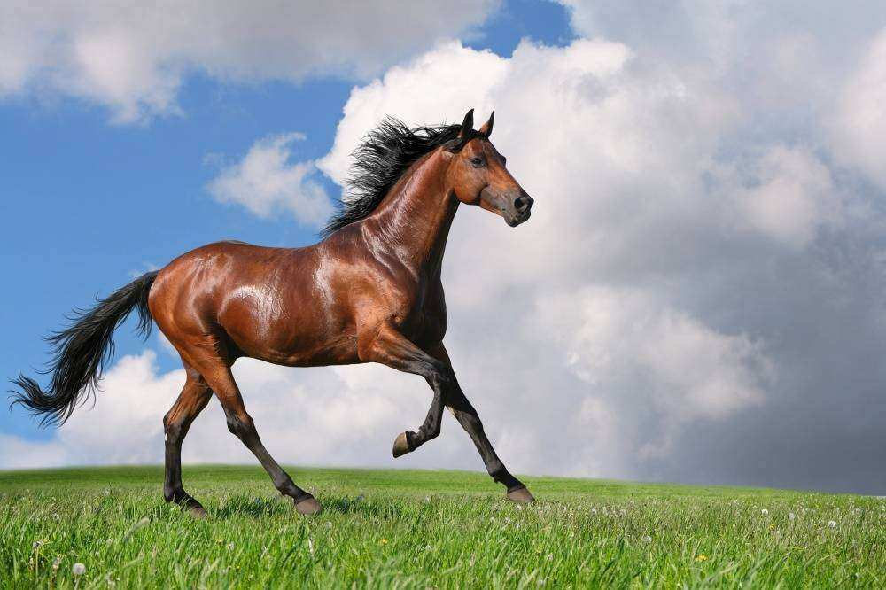

Bem alimentadas, as vacas produzem leite e carne nutritivos e deliciosos. Além disso, as fezes delas são ricas em matéria orgânica e inorgânica, e, por isso, servem como excelentes fertilizantes para a plantação.
Além de transporte do ser humano, o cavalo é usado no transporte de cargas e no trabalho com o gado. Nos dias atuais, é muito usado também em: hipismo, adestramento, polo, salto, vaquejada e rodeio.
Importância econômica A criação de ovelhas (ovinocultura) é uma atividade que tem ocupado fazendeiros desde os tempos mais remotos, pois este animal pode fornecer leite, lã, couro e carne. No Século XXI as ovelhas ainda constituem importância vital na economia de vários países